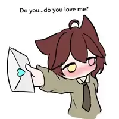

A tiny message just for you

Arsi, do you… do you love me? 🥹
I wanted to ask you something special. No pressure—just a little question from me to you. 💌
Made with a little courage, lots of care & one very nervous heart ✨

I wanted to ask you something special. No pressure—just a little question from me to you. 💌